Bonjour!!!!!!!!!!!!
リポーターよりフランス三日目をお伝えします!!!!
本日は朝早く起床．そんでもってノー朝食デーです．
何故かと言うと…
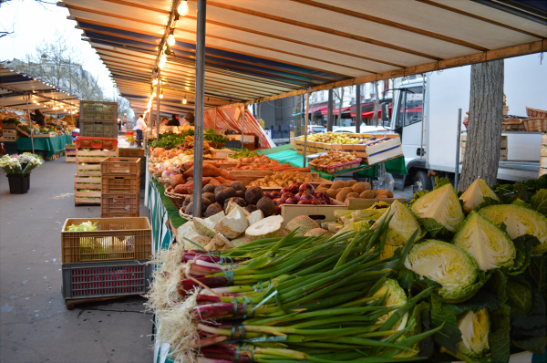
marche!!!!!!!!!
フランスの朝市へ行くためです！！！！
先生曰く，Marcheは早朝の5時頃に始まって8,9時には殆どなくなってしまうということだったので，AM6:30には到着するというスケジュールで早めに来てはいたのですが…
まさかの準備中．
ちなみにこのMarche,一応開催時間(AM7:00)も情報サイトに書いてあるんですが…
AM7:00の様子．
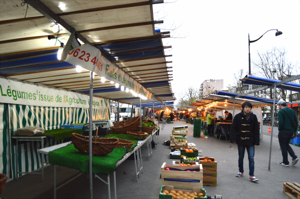
まじか．どう見ても準備中ですね…．
その後お尋ねしたところによると，それぞれのお店の営業時間はそれぞれ異なっているらしく，あるお店はAM10:00，またあるお店はPM12:00から開店するのだとか．
開店しているパン屋さんをみつけたので，そこでバゲットを購入．
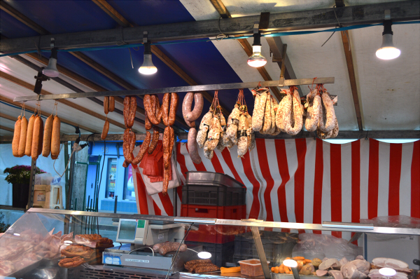
また，肉屋さんでハムと謎の骨付き肉を，チーズ屋さんで謎のチーズを買いました．
チーズは粘土を扱うときに使用する切り糸のような道具で購入する大きさに切ってもらい，重量で購入する方式でした．
Marcheでは，殆どの店に秤が有り，1kg辺り幾らなのか書かれたプレートを見ながら購入します．（最近はあまり見なくなりましたが，日本のお肉屋さんと似ています）
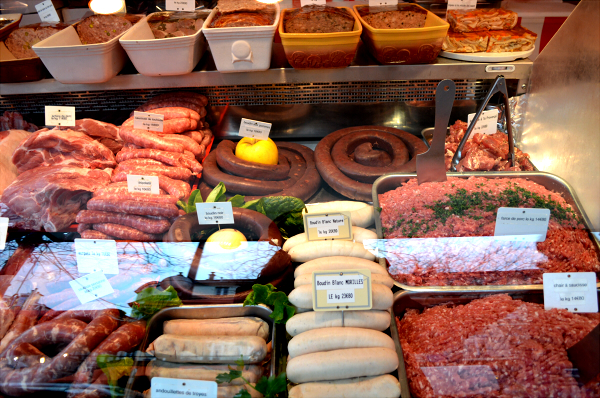
会話難易度的にはそこまで難しくないですが，とっさに数字が出てこないと厳しいです．明確な個数の有るものは指でサインを出すことができますが，重量だと300とか1/2とかすぐに出てきてしまうので，そこがなかなかハードモード感がありました．half,quarterはかろうじて出せたとしても…三分の一？！えっなにそれ！？ってなってしまう．いやはや．
家に帰ってから，先程買ったパンにレタスとサラダ，ハムやチーズを挟んで朝食をとりました．
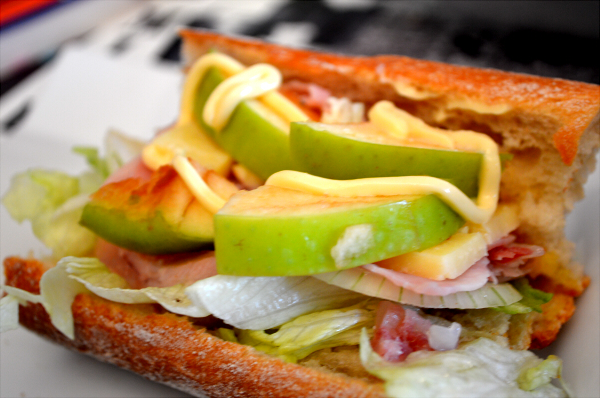
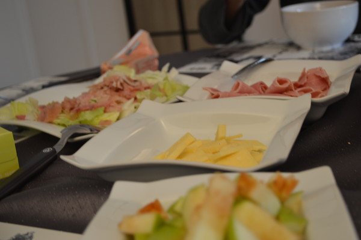
バイキング風にそれぞれお皿に盛ってあるので，好きにサンドできます．
そうなると…
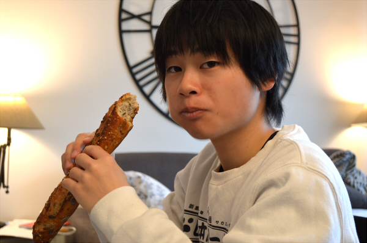
パンだけで食べだしたりする．
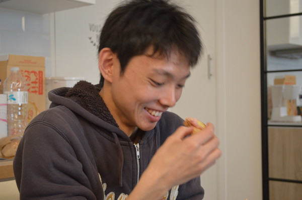
それから，お家に用意されていたジェルボールを使ってタオルや下着，Tシャツ等を洗濯しました．
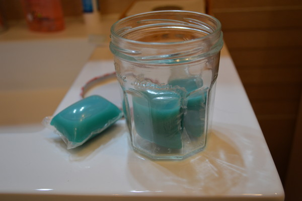
元々洗って再び利用する予定ではあったのですが，予想以上にタオルの必要性が高かったので，今後もし同じような経験をするとしたら持っていこうと決めました．
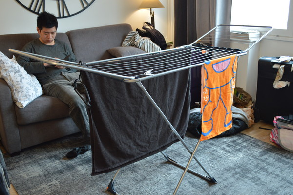
幸い，宿タオルは一人当たり二枚（大小）あったので，小さい方を普段使いにして大きい方は小さい方が洗濯中のときのみ使うピンチヒッターとして利用していました．日本のタオルよりも分厚いので吸水性も高く，また乾きにくい．ヒーターのそばにくっつけるように意識しないと中々乾かないです．
あ，あと今後同じようにシェアハウス的に宿に泊まるグループが居た場合に書いておきますが，洗濯は本当に最初に予定を立てておいたほうが良いですよ…！！！ それを見越して衣類の着回しを考えたり，持っていく荷物や買い出しの品が変わったりするので．いや本当に．
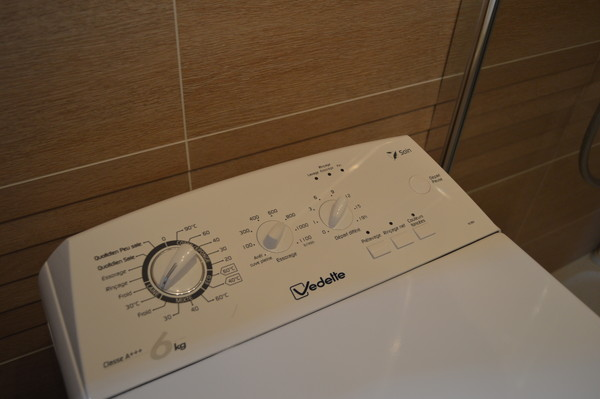
そして案の定読めない洗濯機のUI．もうなにがなんだか…
その後，私とリーダー・望月は再びマルシェへ．
お目当ては先程購入できなかったものです．
望月くんの買いたかったのは…大きなイチゴ！
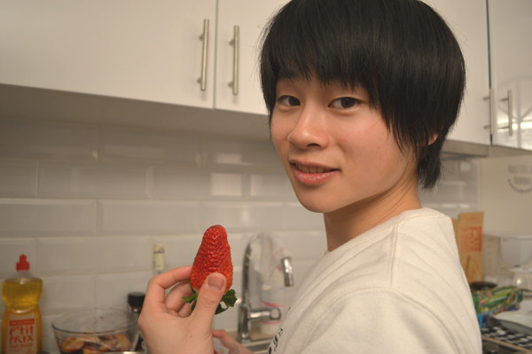
とっても大きい．美味しそう…美味しそう…でもお財布忘れちゃった…(´・ω・｀)と先ほどは買えなかったイチゴです．
How Much?と，指差しながらお聞きすれば快く「Three Euros」と教えてくれました．ありがとうイングリッシュ．
そんでもって…
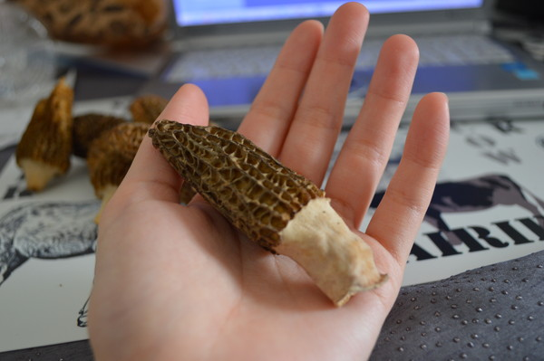
私の買いたかったchampignon（キノコ）!
このキノコについて語るとちょっぴり長くなるので割愛しますが，和名ではアミガサタケと呼び，あんまり馴染みがないですが，仏語ではモリーユと呼び，春の訪れを感じさせるキノコです（そしてこれが結構高い）ちなみにアミガサタケの仲間にはかの有名なシャグマアミガサタケ様がいらっしゃいます．こいつは猛毒ですが，とある国では湯がきまくって食べるそうな．まあベニテン様も何日も掛けて処理すれば強烈な旨味成分のあるキノコとして美味しくいただけるそうですしね．そういうものかもしれません．
肝心の味はというと，香りの強い舞茸が一番しっくり来ると思います．寝る前に，こっそりスーパーで山盛りになって売られているホワイトアスパラと（そういえば，緑のアスパラは見ませんでした）一緒に炒めて食べたら美味しかったです．
そして本日は浅野くんがご飯を作りました．
「俺料理できないよ…？？」
「「冷食でもええんやで！」」
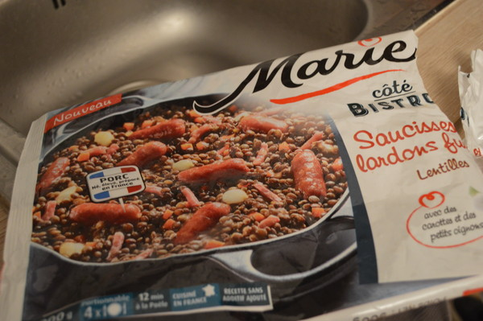
ということで，謎ミール．
冷食なのですが，部屋の冷蔵庫に冷凍場所を見つけられず，冷蔵庫保管をしていました．（おそらくですが，ダイヤルを回して氷温↔冷温を切り替えるタイプだったのかも知れない．ｳﾜｰ）
その結果，とけてしまい若干ベッチョリしましたが，浅野くんがしっかり炒めて水分を飛ばしてくれました．
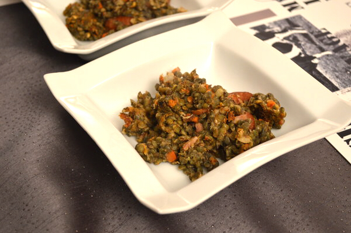
ｵｲｼー!ﾀｰﾉｼｰ!
きょうのおまけ
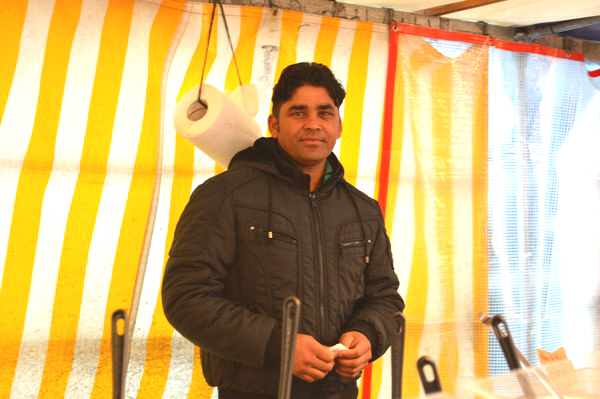
Marcheで出会った店員のお兄さん．横に居たシャイなおじさまと仲よさげに「見といで見といで！」「俺じゃなくてこっち撮って撮って！」と話しかけてくれました．